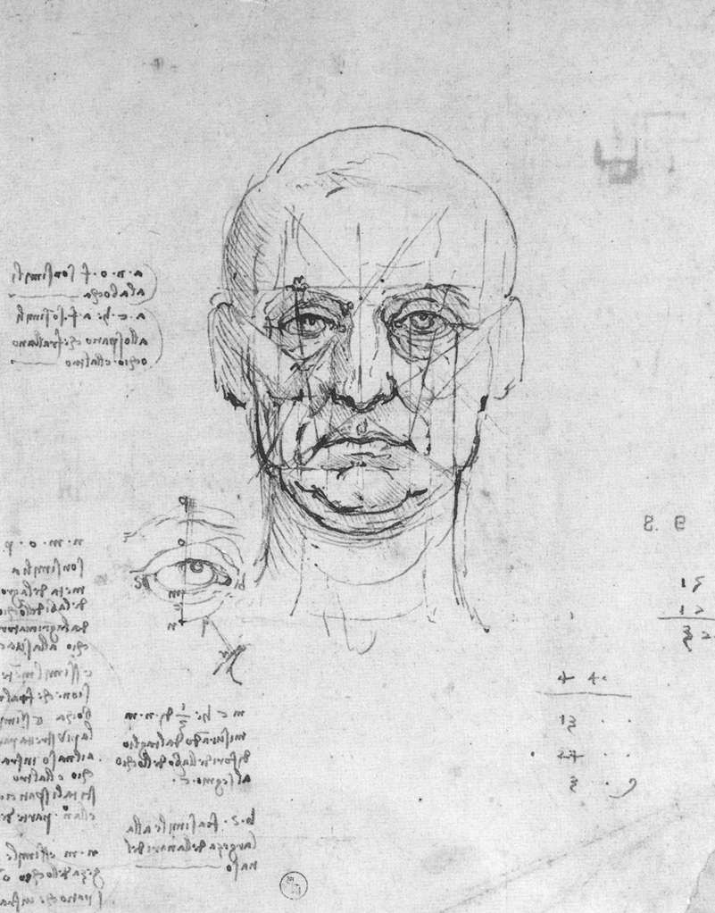
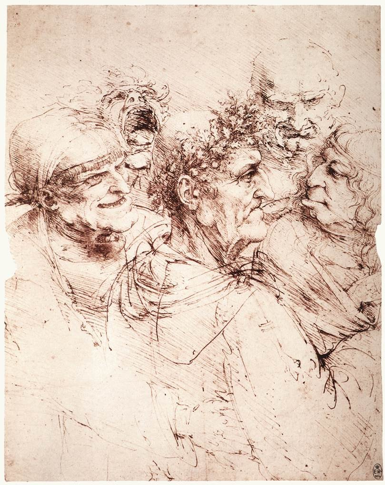
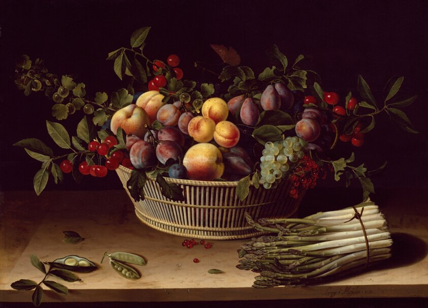

How do artists convince a flat surface to hold weight, depth, and structure?
You have spent this year editing photos, composing color, and building images from existing pieces. This module you become a drawer: someone who builds an image from nothing but a brush and a blank canvas. Digital drawing uses the same eye and the same rules artists have used for centuries, now with a brush tool instead of charcoal. This module you learn two of the most important rules: proportion and form.
👀 PART 1 · LOOK FIRST
Proportion is the size relationship between parts of an object or figure. When proportion is off, even a technically clean drawing looks wrong. Look at the two faces below. Both use the same simple shapes. Only the placement changes.

Leonardo da Vinci (Italian, 1452–1519), Study on the Proportions of the Head and Eyes, late 15th century. Pen and ink. Biblioteca Reale, Turin. Public domain. Source: commons.wikimedia.org
Correct: eyes mapped to the halfway line
↔

Leonardo da Vinci, Study of Five Grotesque Heads, c. 1494. Pen and ink. Royal Library, Windsor Castle. Public domain. Source: commons.wikimedia.org
Exaggerated: proportion deliberately broken
Both are real Leonardo da Vinci studies. On the left, he maps the standard head canon with guide lines: the eyes fall at the halfway line between the top of the skull and the chin. On the right, his grotesque-head studies crowd and distort that same canon on purpose, which is what "off" proportion looks like when it is not being used deliberately for effect.
💭 QUICK CHECK-IN · NO WRONG ANSWER
Think of a drawing or cartoon where something looked "off" to you. What do you think caused it?
📚 PART 2 · DRAWING TOOLS IN PIXLR E
Digital drawing swaps physical media for three tools that work together on every drawing you make:
Brushes. Pixlr E's Brush tool has adjustable size, hardness, and opacity. A hard, small brush behaves like a pencil; a large, soft, low-opacity brush behaves like a blending stump.
Layers. Put your sketch on one layer and your clean lines or color on another. You can lower a layer's opacity to trace over it without losing the original, and hide or delete a layer without touching the rest of the drawing.
Shapes. The Shape tool draws perfect circles, ovals, and rectangles. Professional character and object drawing almost always starts by blocking in the big shapes (a circle for a head, an oval for a torso) before any detail is added.
💡 THE BUILD-UP WORKFLOW
Set up three layers before you draw: Sketch (bottom, loose shapes, low opacity), Line Art (middle, clean confident lines), and Shading (top). Working in this order keeps early mistakes easy to fix and mirrors how professional illustrators build a drawing from rough to refined.
Two habits keep proportion accurate while you draw:
Compare parts, not just look at the whole. Ask "how many head-widths tall is this body?" instead of guessing.
Use light guide shapes first. A circle and a few guideline strokes on your Sketch layer, at low opacity, keep your whole drawing in proportion before you commit to final lines.
🔍 PART 3 · FORM: MAKING SOMETHING LOOK THREE-DIMENSIONAL
Form is the illusion of three-dimensional volume on a flat surface. A circle is a shape; a sphere is a form. The difference between them is entirely value, meaning how light or dark an area is. Artists imagine a light source, then place values accordingly:
Highlight. The brightest point, closest to the light source.
Midtone. The object's base value in regular light.
Core shadow. The darkest band, where the surface turns away from the light.
Reflected light. A faint lightening at the very edge of the shadow, bounced from nearby surfaces.
Cast shadow. The dark shape the object throws onto the surface behind or beneath it, which anchors it in space.
A value scale from lightest to darkest. Every rendered form uses a range like this, not just black outlines.

Louise Moillon (French, 1610–1696), Still Life with a Basket of Fruit and a Bunch of Asparagus, 1630. Oil on panel. Art Institute of Chicago. Public domain. Source: artic.edu/artworks/62450
A single light source rakes across the peaches at the center of the basket. Look for all five value zones on their rounded surfaces: a bright highlight where the light hits most directly, a midtone wrapping around the side, a darker core shadow where the curve turns away from the light, and a touch of reflected light warming the edge of that shadow. The bundled asparagus at the right throws a clear cast shadow onto the tabletop, anchoring it in space, exactly the way this module's project asks you to anchor your own drawing.
NASA / Lunar Reconnaissance Orbiter, Waxing Crescent, 2014. Public domain (NASA). Source: commons.wikimedia.org
Full value range: reads as a sphere
Both are real photographs. The coin's stamped design has almost no physical depth, so even lighting makes it read like a flat pattern. Sunlight raking across the Moon's actual curved surface creates the same highlight-to-core-shadow gradient described in this lesson, which is exactly why it reads as a solid sphere rather than a flat disc.
🎨 RENDERING IN PIXLR E
On your Shading layer, set Blend Mode to Multiply for shadow strokes so they darken what is underneath without covering your line art, and use a soft, low-opacity brush to build the core shadow gradually instead of one hard stroke. For a highlight, add a new layer set to Screen or simply use a small soft white brush at partial opacity.
⚡ TRY IT · PROPORTION OR FORM?
Read each problem and decide which concept it is describing, then check your answer.
A drawn apple has a perfect outline but looks completely flat, like a sticker, with no sense of roundness.
A drawn dog has a head that is nearly as large as its whole body.
⚠️ WORTH KNOWING · AI DRAWING TOOLS
AI tools can generate a finished-looking drawing instantly, but they cannot show you why a particular proportion looks right or where a shadow should fall; that judgment is the skill this lesson builds. This module's exercise is built by hand in Pixlr E so you practice the seeing and deciding, not just the producing.
📝 VOCABULARY
ProportionThe size relationship between parts of an object or figure.
FormThe illusion of three-dimensional volume on a flat surface.
ValueHow light or dark an area is.
HighlightThe brightest point on a form, closest to the light source.
Core ShadowThe darkest band on a form, where the surface turns away from the light.
Reflected LightA faint lightening at the edge of a shadow, bounced from nearby surfaces.
Cast ShadowThe shadow an object throws onto the surface behind or beneath it.
Blend ModeA setting that controls how a layer's colors combine with the layers beneath it, such as Multiply or Screen.
➡️ WHAT YOU'LL DO NEXT (IN CANVAS)
1
Module 25.01 Mini Lesson: Value Scale Warm-Up
Build a 6-step value scale in Pixlr E using one brush at different opacities. Completion grade.
2
Module 25.02 Discussion: Spotting Proportion and Form
Post an image where proportion or form is used well, and name the technique.
3
Module 25.03 Quiz: Proportion & Form
8 questions, auto-graded in Canvas.
4
Module 25.04 Studio Project & Reflection: Proportion & Form Drawing
Draw a simple object or figure in Pixlr E, blocking proportion with guide shapes, then rendering it with a full value range. Your graded artwork this module.
💪 THE BIG IDEA
A drawing convinces a viewer in two separate steps: proportion convinces the eye that the parts belong together, and value convinces the eye that the whole thing has weight and takes up space. Neither step needs fancy tools, only a plan and a light hand while you build it up. Everything else this quarter, mosaic, animation, and your final portfolio, builds on these two habits.
Optima Academy Online · DIGITAL ART IMAGING · Quarter 4 · Student Lesson Page


.jpg){kind=link}